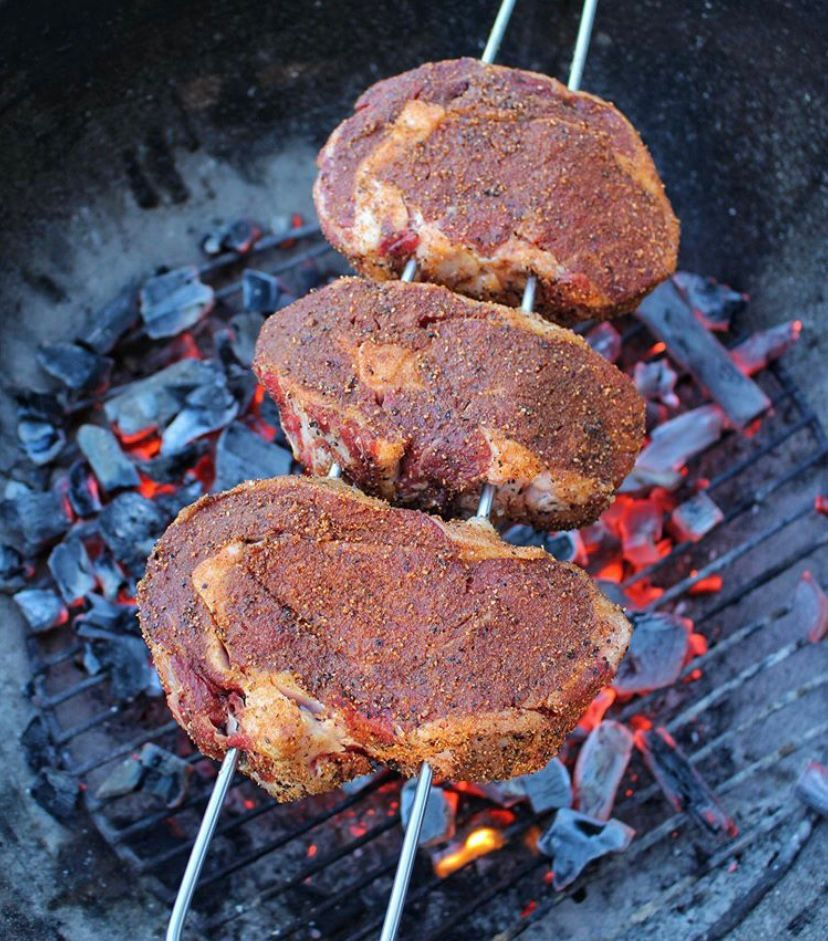

Culinária, conhecida como a “arte de cozinhar”, é para mim um dos maiores prazeres da vida, sendo o meu prato preferido o churrasco, o prato abaixo é um churrasco de filé argentino, temperado com pimenta do reino, páprica defumada e sal de parrilha.
